Mobile App for iOS Fragrantica
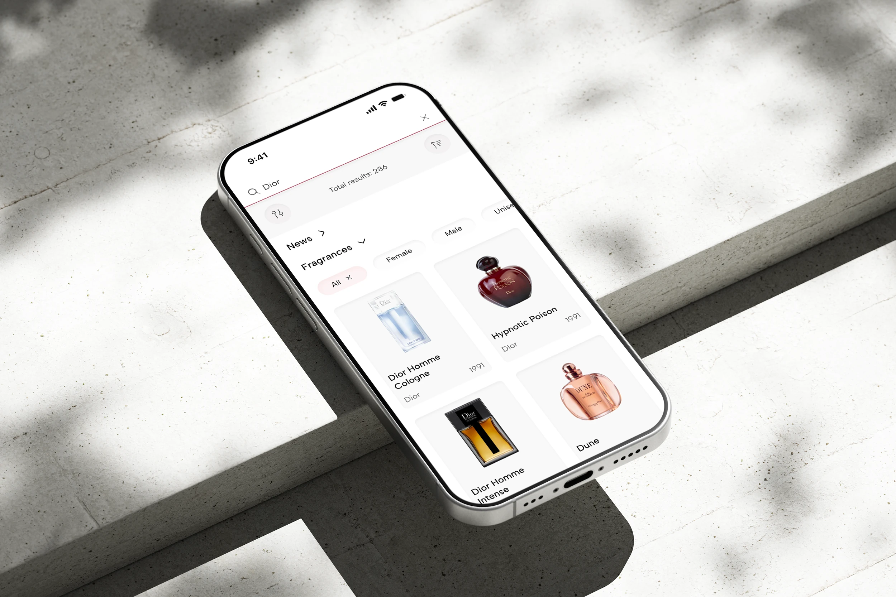
Fragrantica is an online fragrance encyclopedia, a platform for exploring perfumery, and the world’s largest community of fragrance enthusiasts.
I designed a mobile app concept that reimagines the platform’s user experience for a mobile-first format.
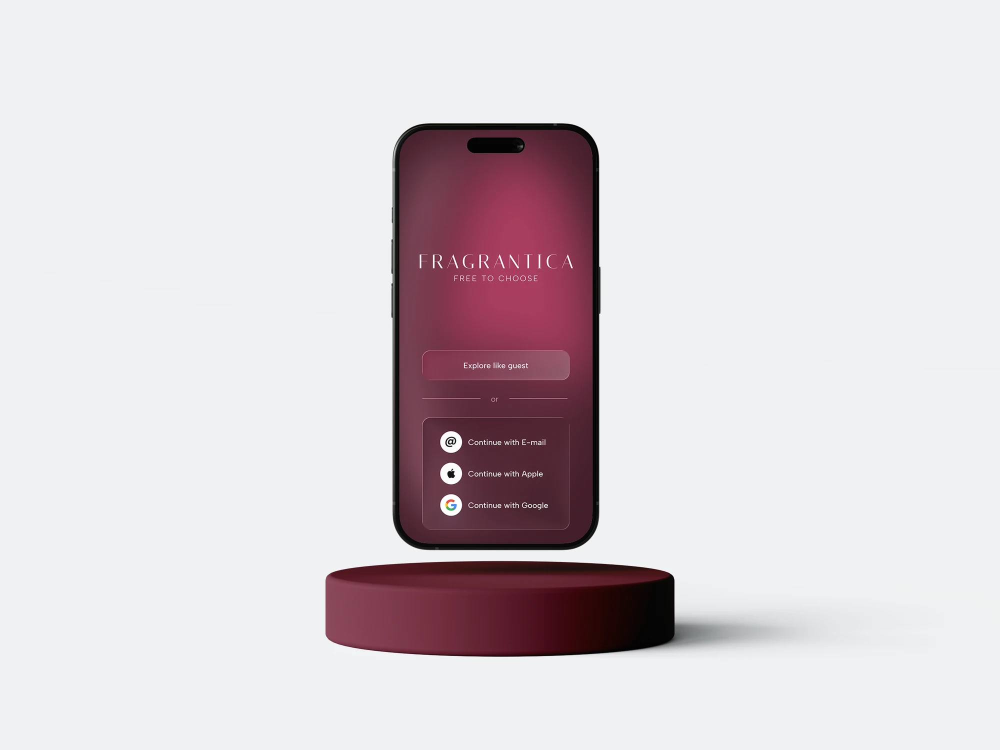
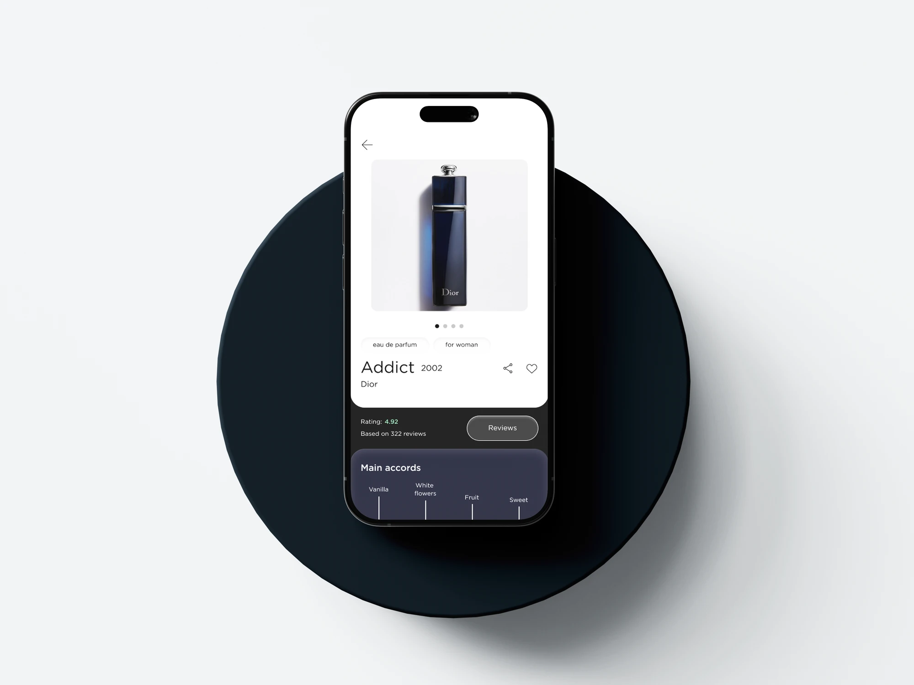
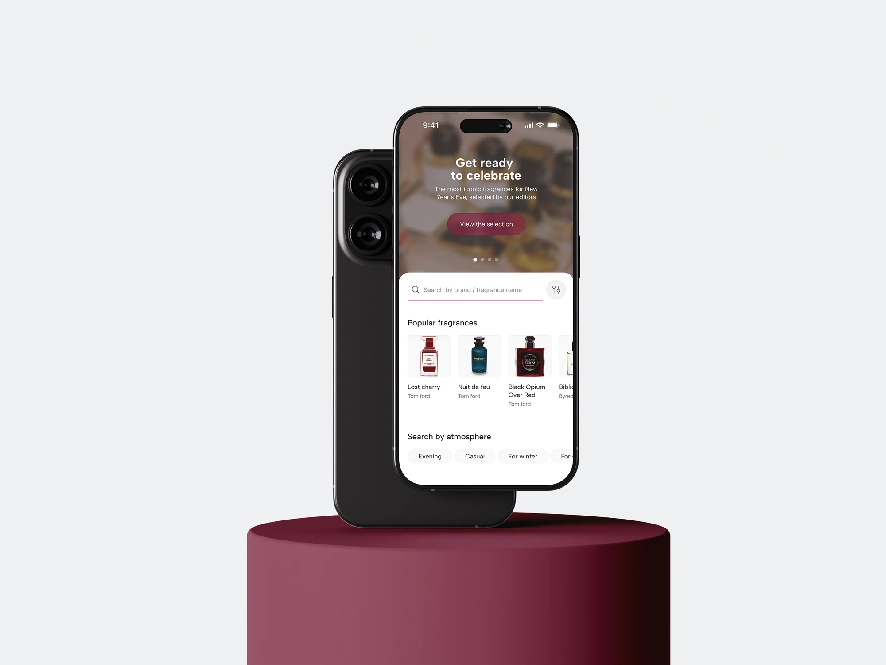
Fragrantica’s mobile experience does not fully reflect the capabilities and usage patterns of smartphones: the interface is overloaded, key features and community interactions are poorly adapted, while the potential of mobile technologies and personalization remains largely unused
Design Process
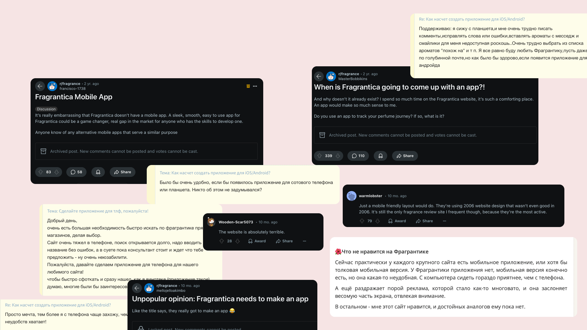
1/5 Current Experience
I reviewed conversations on Reddit, iRecommend and the Fragrantica forum to understand how people use the current platform. The feedback confirmed demand for a mobile app and highlighted an overloaded interface, weak mobile adaptation and friction in everyday fragrance discovery.
Screens
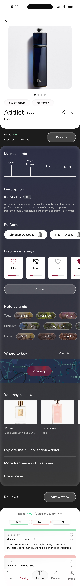
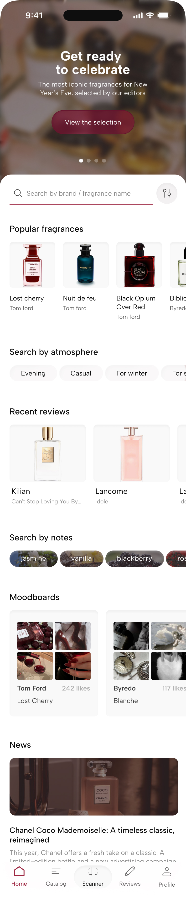
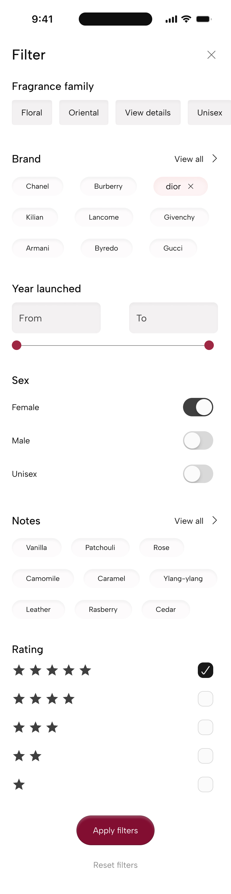
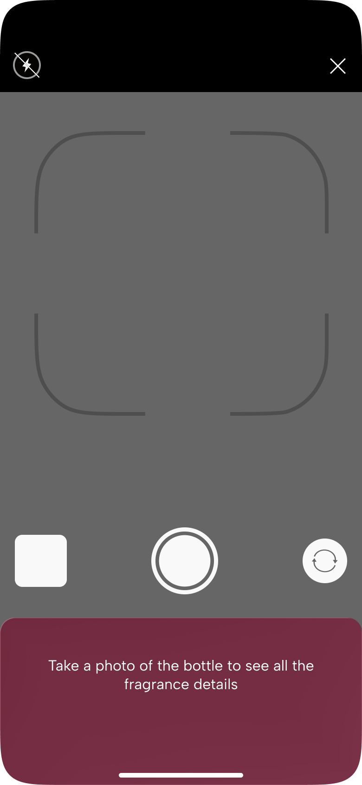
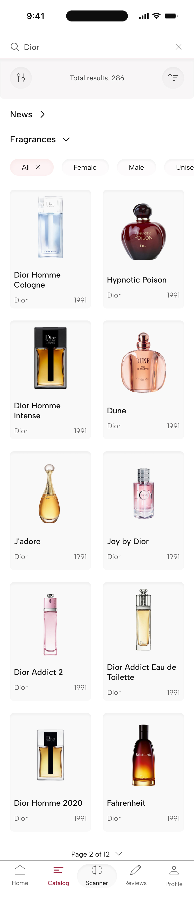
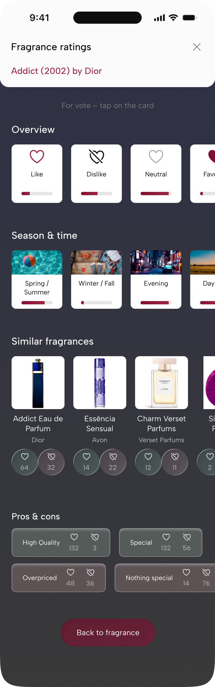